Сальвадор
Далі
Горщар Вероніка · 2026
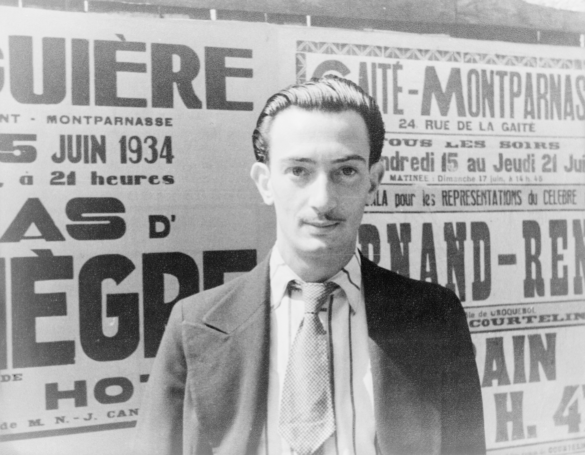
Дитинство
та юність
Народився 11 травня 1904 року у Фігерасі, Каталонія. Коли йому було п'ять, батьки привели його на могилу старшого брата і сказали, що він — його реінкарнація.
У 1922-му вступив до Академії мистецтв у Мадриді. Подружився з Бунюелем та Лоркою. З академії його двічі виключали — вдруге за заяву, що екзаменатори недостатньо компетентні, щоб його оцінювати.
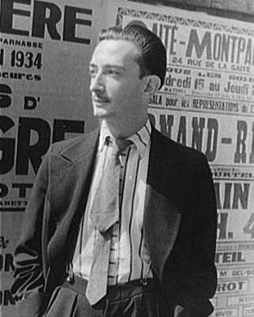
Далі, 1934 · Карл Ван Вехтен Dalí Atomicus · Філіп Халсман, 1948
Dalí Atomicus · Філіп Халсман, 1948
Кар'єра та
спадщина
У 1929 приєднався до сюрреалістів у Парижі та зустрів Ґалу — музу і дружину до кінця життя. У 1930-ті розробив «параноїко-критичний метод»: бачити подвійні образи у звичайних речах.
У 1940-х — США: реклама, Голлівуд, сцена сну для Гічкока. Повернувся в 1948-му, побудував Театр-музей у Фігерасі. Помер 23 січня 1989 року у своєму музеї.
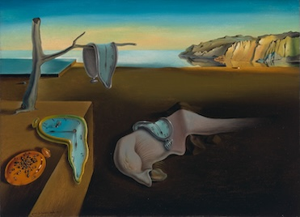
ПОСТІЙНІСТЬ ПАМ'ЯТІ
1931 · олія на полотні · 24 × 33 см · MoMA, Нью-ЙоркЯк камамбер
став мистецтвом
Картина розміром з аркуш А4 стала найвідомішим образом сюрреалізму у світі. Далі написав її за один вечір, поки чекав на Ґалу з кіно — ідея прийшла від шматка камамберу, що плавився на столі.
На пустельному пейзажі Порт-Льїґату лежать м'які годинники. На одному сидять мурахи — символ тлінності й розпаду.
Картина привезла Далі світову славу і зараз є одним з найцінніших експонатів MoMA.
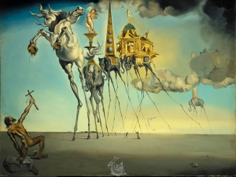
СПОКУСА СВЯТОГО АНТОНІЯ
1946 · олія на полотні · 89.7 × 119.5 см · Брюссель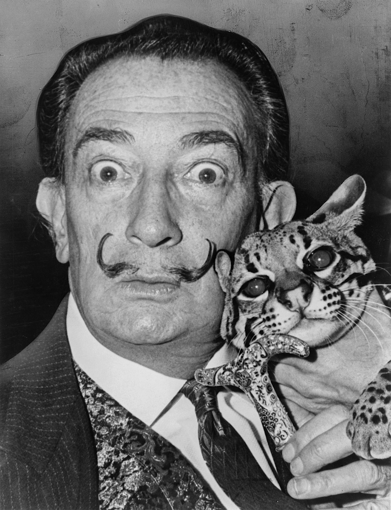
Далі з оцелотом Бабу, 1965Процесія
спокус
Написана для конкурсу — кіностудія шукала полотно до фільму «Приватне життя Бель Амі». Конкурс виграв Макс Ернст, але картина Далі стала відомішою за фільм.
Святий Антоній на колінах тримає хрест. Перед ним — кінь і слони на тонких павучих ногах, що несуть земні спокуси. Це єдиний конкурс у житті Далі.
Два полюси картини
Тонкі ноги слонів
Крихкість того, що здається масивним: багатства, влади, тілесних насолод. Кожен слон несе щось конкретне — обеліск влади, спокусу, будівлю розкоші.
Хрест і реальність
Антоній протиставляє спокусам лише хрест — єдине стабільне у картині. На горизонті Ескоріал — точка реальності серед галюцинації.
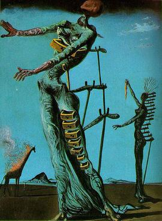
ПАЛАЮЧА ЖИРАФА
1937 · олія на полотні · 35 × 27 см · Базель, ШвейцаріяПророцтво
війни
Написана за два роки до Другої світової. Сам Далі називав її «пророцтвом війни».
На задньому плані палає жирафа. На передньому — жіночі фігури з висувними шухлядками в тілах: посилання на Фройда. Фігури спираються на милиці — без них вони б розвалились.
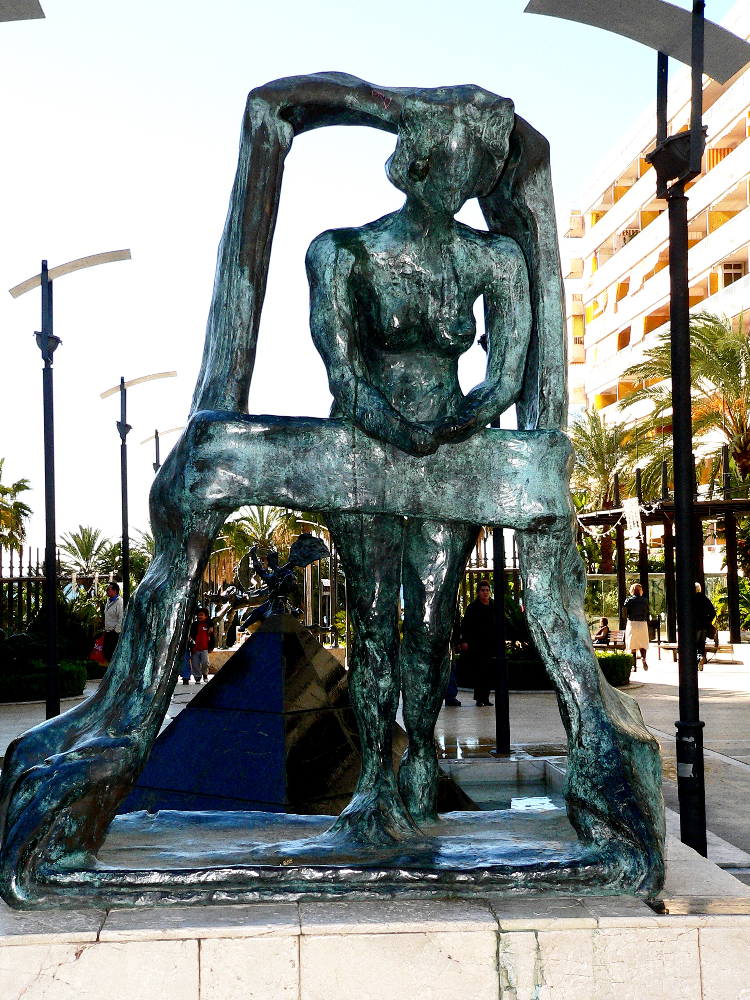
Синє небо створює контраст: воно спокійне, а все під ним охоплене тривогою. 1937 рік в Іспанії — громадянська війна, бомбардування Герніки. Далі відчував наближення катастрофи.
Шухлядки
Приховані думки, страхи та бажання підсвідомості.
Милиці
Хиткість тіла і розуму — без опор фігури розвалилися б.
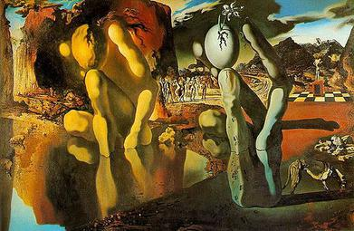
МЕТАМОРФОЗА НАРЦИСА
1937 · олія на полотні · 51.1 × 78.1 см · Тейт Модерн, Лондон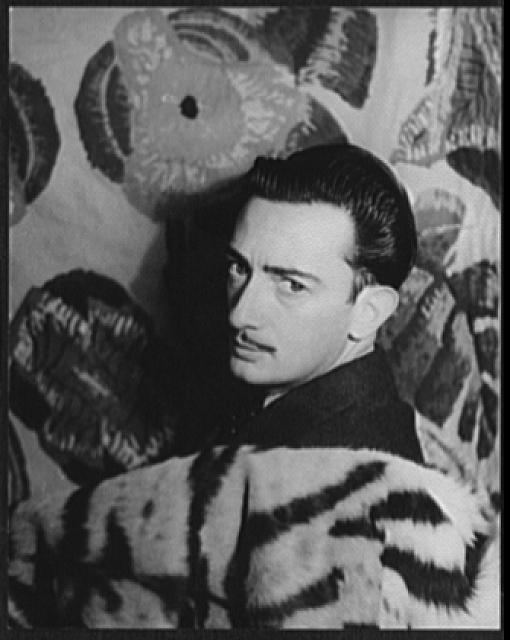
Бібліотека Конгресу СШАКартина, яку
оцінив Фройд
Єдина картина, яку Далі показав Фройду особисто — Лондон, 1938. Фройд записав: «Цей молодий іспанець з фанатичними очима цікавіший за інших сюрреалістів».
Ліворуч Нарцис, зігнутий над водою. Праворуч та сама форма — кам'яна рука з яйцем, з якого проростає квітка.
Подвійне бачення
Далі написав до картини поему: від живої людини до каменю, від каменю до квітки. Параноїко-критичний метод працює на повну: дивишся довго — фігура Нарциса стає рукою з яйцем, а рука — людиною.
На задньому плані — фігури на шаховій дошці, силует на постаменті, хмари. Кожен елемент читається подвійно. Це і була мета.
Висновки з біографії
Не бійся бути іншим
Далі вигнали з академії — він зробив з цього візитку. Подвоїв ставку на унікальність.
Знайди свою Ґалу
За великим проектом стоїть хтось, хто вірить у тебе. Ґала тримала все на плаву.
Змішуй дисципліни
Кіно, фото, скульптура, дизайн, реклама. На перетині жанрів — найцікавіші ідеї.
Що показують картини
Час — не абсолют
Пам'ять змінює минуле щоразу, коли ми до нього звертаємось.
Крихкість масивного
Влада, багатство, слава тримаються на тонких ногах.
Шухлядки підсвідомості
У кожній людині є сховані думки, страхи і бажання.
Мистецтво передбачає
«Палаюча жирафа» з'явилася за два роки до війни.
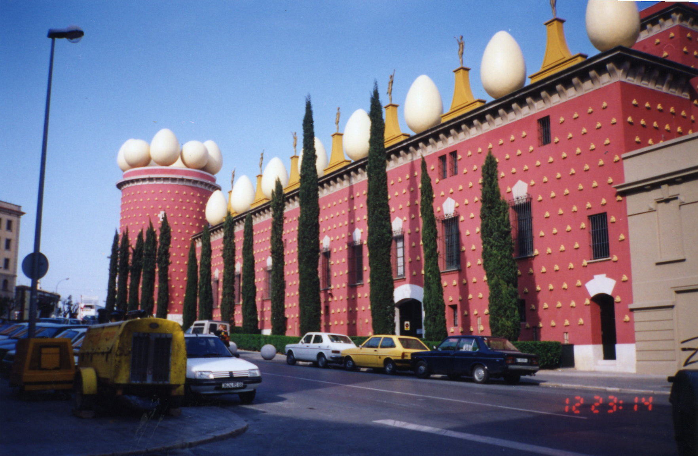
Театр-музей Далі, ФігерасДжерела
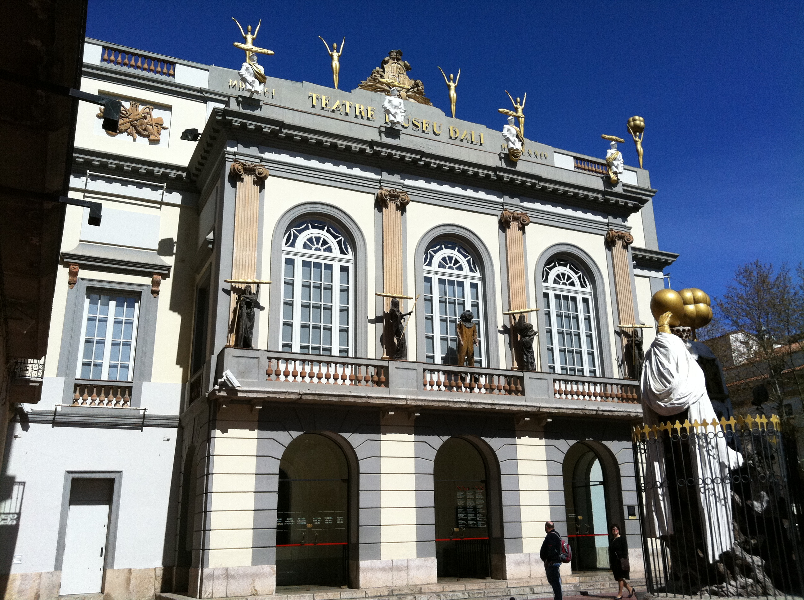